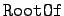

Inhalt Index DeskTop Bronstein

 Computeralgebrasysteme Anwendungen von Computeralgebrasystemen Manipulation algebraischer Ausdrücke
Computeralgebrasysteme Anwendungen von Computeralgebrasystemen Manipulation algebraischer Ausdrücke


Maple stellt die in der folgenden Tabelle dargestellten Operationen für die Umformung und Vereinfachung algebraischer Ausdrücke bereit.
| löst die Potenzen und Produkte in einem algebraischen Ausdruck p auf. Die optionalen Argumente qi verhindern die weitergehende Auflösung der Unterausdrücke qi |
|
| faktorisiert den Ausdruck p. K ist ein optionales  Argument | |
| wendet eingebaute Vereinfachungsregeln auf p an. Bei Anwesenheit der optionalen Argumente werden nur diese zur Anwendung gebracht |
|
| vereinfacht p bezüglich seiner Wurzelanteile | |
| stellt p in der Normalform einer rationalen Funktion dar | |
| sortiert die Glieder des Polynoms p nach fallenden Potenzen | |
| liefert den Koeffizienten des Gliedes mit xi | |
| faßt Glieder mit der Variablen v eines Polynoms mehrerer Veränderlicher zusammen |